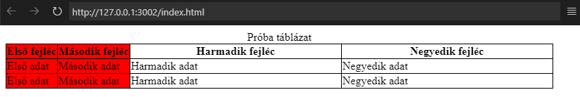

A HTML-táblázatok (table-elem) segítségével a
webfejlesztők sorokba és oszlopokba rendezhetik
az adatokat. Ezek cellákban kerülnek
eltárolásra.
-tr (table row) elemek tartalmaznak egy
sornyi cellát. -th (table header) elemek a
fejléc adatoknak. Alapból félkövér és középre
zárt szöveggel. -td (table data) elemek a
tényleges adatoknak. Bármilyen HTML elemet
eltárolhatunk a cellákban.
Függőleges fejléc esetén:
A fenti kód eredménye.
Adhatunk címet is a táblázatnak a caption-elem
segítségével.
Mire jók a következő attribútumok: colspan, rowspan?
A fenti kód eredménye.
Előfordul, hogy egy cella több oszlopot is
átfog, ekkor használjuk a colspan-attribútumot.
Az egyenlőségjel után lévő szám jelöli az
átfogott oszlopok számát.
Ügyeljünk rá, hogy elhagyjunk annyi
cellaelemet a sorból, amennyi érték a colspan
után áll - 1.
A fenti kód eredménye.
Előfordul, hogy egy cella több sort is átfog,
ekkor használjuk a rowspan-attribútumot.
Az egyenlőségjel után lévő szám jelöli az
átfogott sorok számát.
Ügyeljünk rá, hogy elhagyjunk annyi
cellaelemet a következő oszlop(ok)ból, amennyi
érték a rowspan után áll - 1.
Mire jók a következő HTML-elemek: colgroup, col?
A fenti kód eredménye.

A táblázaton belül stílust tudunk adni külön
oszlopoknak, oszlopcsoportoknak. Ehhez
colgroup-elemben a col-elem segítségével tudok
hozzáfogni.
A span-attribútum jelöli, hogy hány oszlop
legyen érintve.
Csak hátteret (background), láthatóságot
(visibility), határolóvonalat (border) és
szélességet (width) tudok beállítani.
A fenti kód eredménye.
Ha egy vagy több oszlopra nem akarunk stílust
beállítani, akkor csak a span-attribútumot adjuk
meg.
Ha valamit láthatatlanná teszünk, attól még
lefoglalja a helyét az oldalon!
Mire jók a következő HTML-elemek: thead, tbody, tfoot?
A fenti kód eredménye.
A thead-elemet a fejléc sorok összefogására
használjuk, egyszerre stílust adni nekik.
A tbody-elemet a tartalom sorok összefogására
használjuk, egyszerre stílust adni nekik.
A tfoot-elemet a lábléc sorok összefogására
használjuk, egyszerre stílust adni nekik.